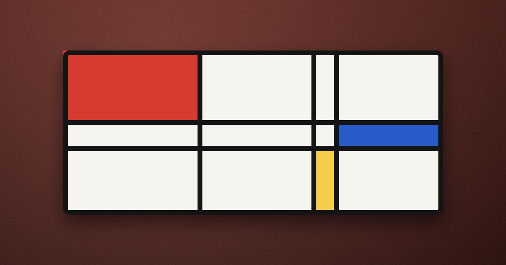
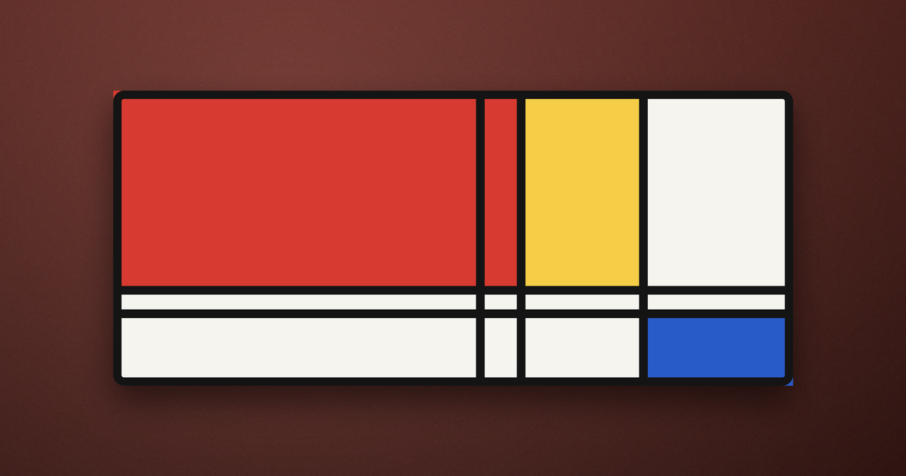
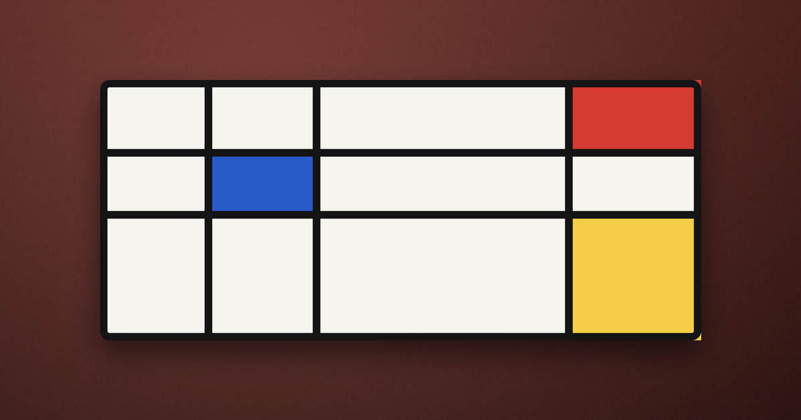
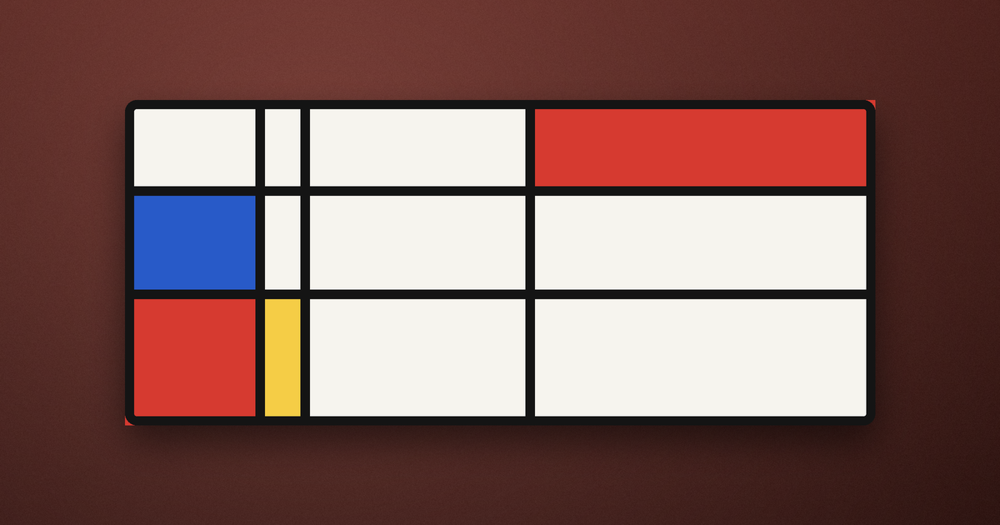

몬드리안 — 세계를 수직과 수평으로 환원한 사람
나는 몬드리안의 그림을 처음 봤을 때 솔직히 '이건 나도 그리겠다'고 생각했다. 흰 바탕에 검은 선 몇 개, 그리고 빨강·파랑·노랑의 네모. 디자인 소품에도 흔히 쓰이는 그 격자 무늬 말이다. 그런데 그가 이 단순한 화면에 이르기까지 걸어온 길을 알고 나서, 나는 그 앞에서 함부로 말하지 못하게 되었다.
나무에서 시작된 환원
몬드리안은 처음부터 격자를 그린 화가가 아니다. 젊은 시절 그는 풍경과 나무를 사실적으로 그렸다. 그러다 한 그루의 나무를 여러 번 반복해 그리며 조금씩 가지를 단순하게 만들어 갔다. 잎이 사라지고, 가지가 선으로 바뀌고, 마침내 나무는 수직과 수평이 교차하는 리듬만 남았다. 대상을 지운 것이 아니라, 대상에서 가장 본질적인 구조만 남을 때까지 깎아 낸 것이다. 이 과정을 그는 환원이라 불렀다. 겉모습을 벗겨 낼수록 사물의 근본 질서가 드러난다고 믿었다.
나는 여기서 예술이 무엇을 '보여 주는가'라는 물음을 다시 만난다. 우리는 흔히 그림이 세계의 겉모습을 옮긴다고 생각한다. 그러나 몬드리안은 겉모습 너머의 균형과 질서를 옮기려 했다. 그에게 빨강과 파랑, 수직과 수평은 특정 사물이 아니라 세계를 이루는 가장 기본적인 대립과 조화의 기호였다.

순수를 향한 금욕
몬드리안의 화면에는 곡선이 없다. 대각선도 없다. 오직 수직과 수평, 삼원색과 무채색뿐이다. 이 엄격한 규칙은 취향이 아니라 신념이었다. 그는 개인의 감정이나 우연한 형태를 걷어 내고, 누구에게나 통하는 보편적 조화에 이르고자 했다. 흥미롭게도 이런 태도는 당시의 여러 사상적 흐름과 맞닿아 있었다. 물질 너머의 정신적 질서를 찾으려는 열망, 그리고 세계를 몇 가지 근본 요소로 설명하려는 지적 야심이 그 안에 함께 흘렀다.
어떤 사상가들은 예술의 힘이 세계를 그대로 베끼는 데 있지 않고, 혼란스러운 현실 아래 숨은 이성적 질서를 드러내는 데 있다고 보았다. 몬드리안의 격자는 바로 그 믿음의 회화적 선언처럼 보인다. 어지러운 세계를 가장 단순한 균형으로 붙잡아 두려는 시도 말이다.

이런 급진적 단순함은 회화 바깥으로도 번졌다. 건축과 가구, 인쇄물과 패션에 이르기까지, 수직과 수평의 질서 그리고 삼원색의 조합은 20세기 디자인의 공용어처럼 퍼져 나갔다. 우리가 오늘 어떤 로고나 표지에서 그 격자의 리듬을 발견하고 '어딘가 세련됐다'고 느낀다면, 그 감각의 뿌리 한쪽에 몬드리안이 있다. 한 화가가 나무를 깎아 낸 끝에 도달한 문법이, 한 세기 뒤의 눈에까지 스며든 셈이다. 나는 여기서 진짜 단순함은 유행을 타지 않는다는 사실을 새삼 깨닫는다.
균형은 대칭이 아니다
가까이서 보면 그의 격자는 결코 기계적이지 않다. 네모의 크기는 제각각이고, 색이 놓이는 자리도 좌우가 다르다. 큰 빨강 하나를 한쪽 구석에 두고, 반대편의 여백과 가느다란 선으로 그 무게를 조용히 맞춘다. 이것은 대칭이 아니라 긴장 속의 균형이다. 서로 다른 힘이 팽팽하게 겨루다가 아슬아슬하게 안정에 이르는 순간. 나는 그 앞에서 오래 머물수록, 단순함이 곧 쉬움은 아니라는 것을 배운다. 몇 개의 선으로 이만한 긴장을 만들어 내는 일은 오히려 더없이 어렵다.

그래서 그의 그림은 볼수록 어렵다. 규칙은 단순한데, 그 단순한 규칙 안에서 무한히 다른 균형이 가능하기 때문이다. 선 하나를 조금만 옮기거나 빨강의 크기를 조금만 키워도 화면 전체의 무게중심이 흔들린다. 몬드리안은 같은 문법으로 수십 년간 서로 다른 그림을 그렸고, 말년에는 도시의 리듬과 재즈의 박자를 격자 안에 담기도 했다. 규칙이 좁을수록 그 안의 선택은 더 예민해진다. 제약이 오히려 무한한 변주를 낳는다는 역설을, 나는 그의 화면 앞에서 눈으로 확인한다.

단순함이 건네는 자유
전시장을 나오며 나는 내 삶의 어수선함을 떠올렸다. 우리는 더 많은 것을 갖고 더 많은 것을 하려다 자주 길을 잃는다. 몬드리안의 격자는 반대 방향을 가리킨다. 무엇을 더할지가 아니라 무엇을 덜어 낼지를 물으라고. 정말 남겨야 할 몇 가지가 무엇인지 가려내는 일, 그 가려냄이 곧 질서이고 그 질서가 곧 자유라고. 나도 나무처럼, 잎을 하나씩 내려놓고 나면 나를 지탱하던 몇 개의 선이 드러날지 모른다.